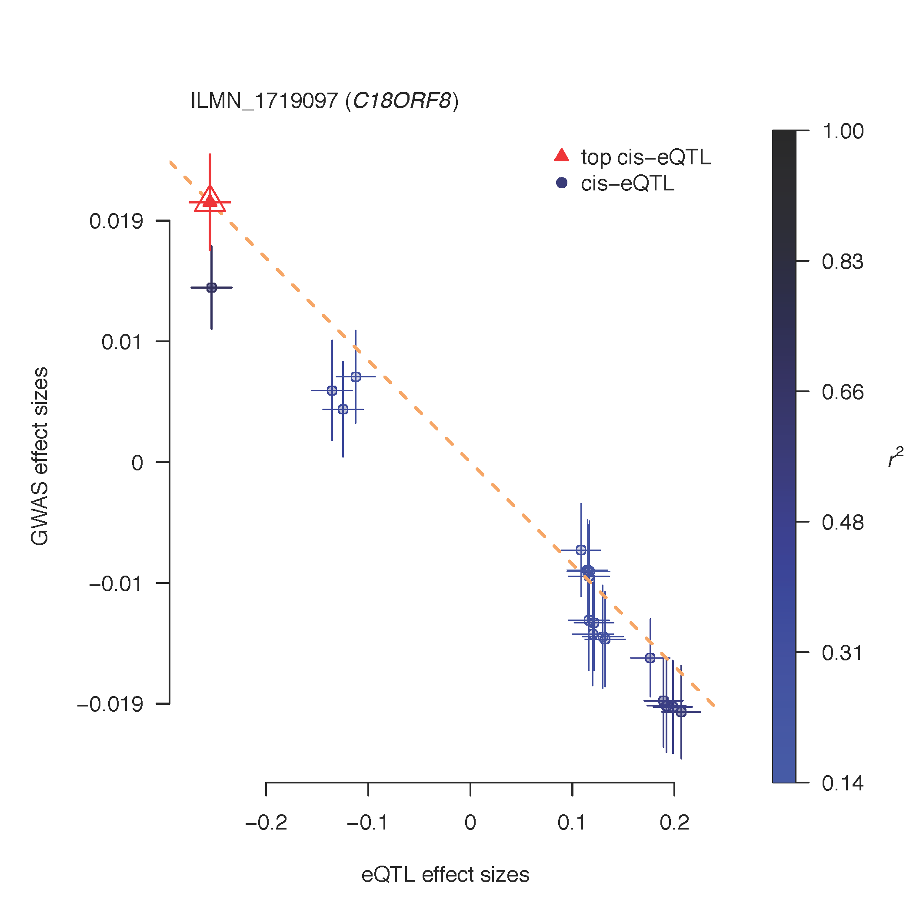

Overview
About
This software tool implements the SMR & HEIDI methods to test for pleiotropic association between the expression level of a gene and a complex trait of interest using summary-level data from GWAS and expression quantitative trait loci (eQTL) studies (Zhu et al. 2016 Nature Genetics). The methodology can be interpreted as an analysis to test if the effect size of a SNP on the phenotype is mediated by gene expression. This tool can therefore be used to prioritize genes underlying GWAS hits for follow-up functional studies.
Credits
Futao Zhang developed the software tool and webpages with supports from Zhili Zheng, Zhihong Zhu, Ting Qi, Yang Wu, and Jian Yang.
Zhihong Zhu and Jian Yang developed the SMR and HEIDI methods.
Ting Qi and Jian Yang developed the MeCS method.
Questions and Help Requests
Bug reports or questions to Jian Yang (jian.yang@uq.edu.au) at Institute for Molecular Bioscience, The University of Queensland.
Citations
SMR & HEIDI methods and software tool
Zhu Z, Zhang F, Hu H, Bakshi A, Robinson MR, Powell JE, Montgomery GW, Goddard ME, Wray NR, Visscher PM & Yang J (2016) Integration of summary data from GWAS and eQTL studies predicts complex trait gene targets. Nature Genetics, 48:481-487.
Multi-SNP-based SMR method and omic-data-based SMR analysis
Wu Y, Zeng J, Zhang F, Zhu Z, Qi T, Zheng Z, Lloyd-Jones LR, Marioni RE, Martin NG, Montgomery GW, Deary IJ, Wray NR, Visscher PM, McRae AF & Yang J (2018) Integrative analysis of omics summary data reveals putative mechanisms underlying complex traits. Nature Communications, 9: 918.
MeCS method
Qi T, Wu Y, Zeng J, Zhang F, Xue A, Jiang L, Zhu Z, Kemper K, Yengo L, Zheng Z, eQTLGen Consortium, Marioni RE, Montgomery GW, Deary IJ, Wray NR, Visscher PM, McRae AF & Yang J (2018) Identifying gene targets for brain-related traits using transcriptomic and methylomic data from blood. Nature Communications, 9: 2282.
SMR & HEIDI analysis
SMR
# run SMR and HEIDI test
smr --bfile mydata --gwas-summary mygwas.ma --beqtl-summary myeqtl --out mysmr --thread-num 10
--bfile reads individual-level SNP genotype data (in PLINK binary format) from a reference sample for LD estimation, i.e. .bed, .bim, and .fam files.
--gwas-summary reads summary-level data from GWAS. The input format follows that for GCTA-COJO analysis ( http://cnsgenomics.com/software/gcta/#COJO).
smr --bld mybld --gwas-summary mygwas.ma --beqtl-summary myeqtl --out mysmr --thread-num 10
--bld reads LD information from a binary file in BLD format
mygwas.ma
SNP A1 A2 freq b se p n
rs1001 A G 0.8493 0.0024 0.0055 0.6653 129850
rs1002 C G 0.03606 0.0034 0.0115 0.7659 129799
rs1003 A C 0.5128 0.045 0.038 0.2319 129830
......
Columns are SNP, the coded allele (also called the effect allele or the reference allele), the other allele (also called the alternative allele), frequency of the effect allele, effect size, standard error, p-value and sample size. The headers are not keywords and will be omitted by the program. Important: “A1” needs to be the effect allele with “A2” being the other allele and “freq” needs to be the frequency of “A1”. NOTE:1) For a case-control study, the effect size should be log(odds ratio) with its corresponding standard error. 2) We use the GCTA-COJO format here to be compatible with the GCTA software. Note that the column "n" will not be used in either SMR or HEIDI analysis and thus can be replaced by "NA" if not available. 3) The allele frequency information in column "freq" will be used in a QC step to remove SNPs with discrepant allele frequencies between data sets.
--beqtl-summary reads summary-level data from a eQTL study in binary format. We store eQTL summary data in three separate files .esi (SNP information, in the same format as the PLINK .bim file), .epi (probe information) and .besd (eQTL summary statistics in binary format). See Data Management for more information. We have prepared the data from the Westra study (Westra et al. 2013 Nat Genet) in this format, which is available for download at Download.
--out saves the results from the SMR analysis in .smr file (text format).
mysmr.smr
ProbeID Probe_Chr Gene Probe_bp SNP SNP_Chr SNP_bp A1 A2 Freq b_GWAS se_GWAS p_GWAS b_eQTL se_eQTL p_eQTL b_SMR se_SMR p_SMR p_HEIDI nsnp_HEIDI
prb01 1 Gene1 1001 rs01 1 1011 C T 0.95 -0.024 0.0063 1.4e-04 0.36 0.048 6.4e-14 -0.0668 0.0197 6.8e-04 NA NA
prb02 1 Gene2 2001 rs02 1 2011 G C 0.0747 0.0034 0.0062 5.8e-01 0.62 0.0396 2e-55 0.0055 0.01 5.8e-01 4.17e-01 28
......
Columns are probe ID, probe chromosome, gene name, probe position, SNP name,SNP chromosome, SNP position, the effect (coded) allele, the other allele, frequency of the effect allele (estimated from the reference samples), effect size from GWAS, SE from GWAS, p-value from GWAS, effect size from eQTL study, SE from eQTL study, p-value from eQTL study, effect size from SMR, SE from SMR, p-value from SMR, p-value from HEIDI (HEterogeneity In Depedent Instruments) test, and number of SNPs used in the HEIDI test.
Missing Value is represented by "NA".
--thread-num specifies the number of OpenMP threads for parallel computing. The default value is 1.
# Specify a method for HEIDI test
smr --bfile mydata --gwas-summary mygwas.ma --beqtl-summary myeqtl --heidi-mtd 0 --out mysmr
--heidi-mtd specifies a method for HEIDI test. 0 for the original HEIDI test approach as in Zhu et al. (2016 Nature Genetics), and 1 for a new HEIDI test. The default value is 1. The new approach uses up to the top 20 SNPs in the cis-eQTL region (including the top cis-eQTL) for heterogeneity test because our latest simulation shows that the power of HEIDI test increases initially but then decreases with increasing number of SNPs (m) with a peak at m = ~20.
# Filter SNPs by MAF (in the reference sample)
smr --bfile mydata --gwas-summary mygwas.ma --beqtl-summary myeqtl --maf 0.01 --out mysmr
--maf removes SNPs based on a minor allele frequency (MAF) threshold in the reference sample.
# Specify a threshold to remove SNPs with discrepant allele frequencies between data sets
smr --bfile mydata --gwas-summary mygwas.ma --beqtl-summary myeqtl --diff-freq 0.1 --diff-freq-prop 0.05 --out mysmr
--diff-freq reads a threshold for allele frequency QC. That is, the SNPs with allele frequency differences between any pairwise data sets (including the LD reference sample, the eQTL summary data and the GWAS summary data) large than the specified threshold will be excluded. The default value is 0.2.
--diff-freq-prop reads a value as the maximum proportion of SNPs that are allowed to have allele frequency differences. The analysis will stop (with an error massage) if the proportion of SNPs being excluded by --diff-freq is larger than the specified value here. The default value is 0.05.
# Include or exclude a subset of individuals
smr --bfile mydata --gwas-summary mygwas.ma --beqtl-summary myeqtl --keep myindi.list --out mysmr
--keep includes a subset of individuals in the reference sample for analysis.
--remove excludes a subset of individuals in the reference sample from the analysis.
myindi.list
F001 S001
F002 S002
F003 S001
...
# Include or exclude a subset of eQTL summary data
smr --bfile mydata --gwas-summary mygwas.ma --beqtl-summary myeqtl --extract-snp mysnp.list --extract-probe myprobe.list --out mysmr
--extract-snp extracts a subset of SNPs for analysis.
--exclude-snp excludes a subset of SNPs from analysis.
mysnp.list
rs1001
rs1002
rs1003
...
--extract-probe extracts a subset of probes for analysis.
--exclude-probe excludes a subset of probes from analysis.
myprobe.list
probe1001
probe1002
probe1003
...
# Other parameters
smr --bfile mydata --gwas-summary mygwas.ma --beqtl-summary myeqtl --peqtl-smr 5e-8 --ld-upper-limit 0.9 --ld-lower-limit 0.05 --peqtl-heidi 1.57e-3 --heidi-min-m 3 --heidi-max-m 20 --cis-wind 2000 --thread-num 5 --out mysmr
--peqtl-smr p-value threshold to select the top associated eQTL for the SMR test. The default value is 5.0e-8. By default, we only run the SMR analysis in the cis regions. Please see below for the SMR analysis in trans regions.
--peqtl-heidi threshold of eQTL p-value to select eQTLs for the HEIDI test. The default value is 1.57e-3, which is equivalent to a chi-squared value (df=1) of 10.
--ld-upper-limit LD r-squared threshold used to prune SNPs (eQTLs) in the HEIDI test, i.e. removing SNPs in very strong LD with the top associated eQTL. The default value is 0.9.
--ld-lower-limit LD r-squared threshold used to prune SNPs (eQTLs) in the HEIDI test, i.e. removing SNPs in low LD or not in LD with the top associated eQTL. The default value is 0.05.
--heidi-min-m minimum requirement of the number of cis-SNPs used in the HEIDI test. We will skip the HEIDI test if the number of SNPs is smaller than the threshold. This is because if the number of SNPs is too small, HEIDI test has little power to detect heterogeneity and possibly generates misleading result. The default value is 3.
--heidi-max-m maximum number of eQTLs used in the HEIDI test. If the number of cis-SNPs included in the HEIDI test after LD pruning is larger than m, then only the top m SNPs (ranked by eQTL p-value) will be used in the test. The default value is 20.
--cis-wind defines a window centred around the probe to select cis-eQTLs (passing a p-value threshold) for the SMR analysis. The default value is 2000Kb.
# Specify a target SNP for the SMR and HEIDI tests
By default, we use the top cis-eQTL as a target in the SMR analysis, i.e. using the top cis-eQTL in the SMR test and then using the top cis-eQTL to test against the other cis-eQTLs in the region for heterogeneity in the HEIDI test. You can also specific the target by the following option. Note that this option will ignore p-value specified by the --peqtl-smr option (--peqtl-heidi still applies).
smr --bfile mydata --gwas-summary mygwas.ma --beqtl-summary myeqtl --target-snp rs12345 --out mysmr
--target-snp specifies a SNP as the target for the SMR and HEIDI tests as described above.
# Specify a list of SNP-probe pairs for the SMR and HEIDI tests
Here we provide two flags to run a batch of SMR analyses based on a user-specified list of SNP-probe pairs. For each probe, the program will only read the data of SNPs within +/- 2000Kb (can be changed by the --smr-wind flag) of the specified SNP. Note that the SNP can be distant from the corresponding probe.
smr --bfile mydata --gwas-summary mygwas.ma --beqtl-summary myeqtl --extract-snp-probe snp_probe.list --out mysmr
--extract-snp-probe specifies a SNP-probe list (see the format below).
smr --bfile mydata --gwas-summary mygwas.ma --beqtl-summary myeqtl --extract-target-snp-probe snp_probe.list --out mysmr
--extract-target-snp-probe specifies a SNP-probe list and forces the specified SNP (not necessarily being the top associated SNP) as the target SNP for the SMR and HEIDI tests.
snp_probe.list
rs1001 probe1001
rs1002 probe1002
rs1002 probe1003
...
# Turn off the HEIDI test
smr --bfile mydata --gwas-summary mygwas.ma --beqtl-summary myeqtl --heidi-off --out mysmr
--heidi-off turns off the HEIDI test.
SMR and HEIDI tests in trans regions
The trans-eQTLs are defined as the eQTLs that are more than 5Mb away from the probe.
smr --bfile mydata --gwas-summary mygwas.ma --beqtl-summary myeqtl --out mytrans --trans --trans-wind 1000
--trans turns on SMR and HEIDI tests in trans regions.
--trans-wind defines the size of a window on either side of the top associated trans-eQTL to select SNPs (passing a p-value threshold) for the SMR and HEIDI test. The default value is 1000 Kb (i.e. a whole region of 2000 Kb).
mytrans.smr
ProbeID Probe_Chr Gene Probe_bp trans_chr trans_leftBound trans_rightBound SNP SNP_Chr SNP_bp A1 A2 Freq b_GWAS se_GWAS p_GWAS b_eQTL se_eQTL p_eQTL b_SMR se_SMR p_SMR p_HEIDI nsnp_HEIDI
prb01 1 Gene1 1001 16 5349752 7350902 rs01 16 6349942 C T 0.131 0.0021 0.0152 8.8e-01 -0.214 0.038 3.26e-08 -0.0098 0.071 8.9e-01 1.73e-1 19
prb01 1 Gene1 1001 21 6443018 8459725 rs02 21 7460164 G C 0.0747 0.0034 0.0062 5.8e-01 0.62 0.0396 2e-55 0.0055 0.01 5.8e-01 4.17e-01 8
......
Columns are probe ID, probe chromosome, gene name, probe position, tans-eQTL chromosome, left boundary of the trans-region, right boundary of the trans-region, SNP name, SNP chromosome, SNP position, the effect (coded) allele, the other allele, frequency of the effect allele (estimated from the reference samples), effect size from GWAS, SE from GWAS, p-value from GWAS, effect size from eQTL study, SE from eQTL study, p-value from eQTL study, effect size from SMR, SE from SMR, p-value from SMR, p-value from HEIDI test, and number of SNPs used in the HEIDI test.
Multi-SNP-based SMR test
Below shows an option to combine the information from all the SNPs in a region that pass a p-value threshold (the default value is 5.0e-8 which can be modified by the flag --peqtl-smr) to conduct a multi-SNP-based SMR analysis (Wu et al. 2018 Nature Communications).
The SNPs are pruned for LD using a weighted vertex coverage algorithm with a LD r2 threshold (the default value is 0.9 which can be modified by the flag --ld-pruning) and eQTL p-value as the weight.
smr --bfile mydata --gwas-summary mygwas.ma --beqtl-summary myeqtl --out mymulti --smr-multi
--smr-multi turns on set-based SMR test in the cis-region.
smr --bfile mydata --gwas-summary mygwas.ma --beqtl-summary myeqtl --out mymulti --smr-multi --set-wind 500
--set-wind defines a window width (Kb) centred around the top associated cis-eQTL to select SNPs in the cis-region. The default value is -9 resulting in selecting SNPs in the whole cis-region if this option is not specified.
smr --bfile mydata --gwas-summary mygwas.ma --beqtl-summary myeqtl --out mymulti --smr-multi --ld-multi-snp 0.1
--ld-multi-snp LD r-squared threshold used to prune SNPs (eQTLs) in the Multi-SNP based SMR test. The default value is 0.1.
SMR analysis of two molecular traits
Here we provide an option to test the pleotropic association between two molecular traits using summary data. Take the analysis of DNA methylation and gene expression data as an example. In this case, we will need mQTL and eQTL summary data in BESD format. The current version of the program focuses only on the analysis in the cis-region, i.e. only testing for associations between genes and DNA methylation sites that are in less than 2 Mb distance.
smr --bfile mydata --beqtl-summary myexposure --beqtl-summary myoutcome --out myomics
--beqtl-summary the first one reads mQTL summary data as the exposure. The second one reads eQTL summary data from as the outcome.
smr --bfile mydata --beqtl-summary myexposure --beqtl-summary myoutcome --extract-exposure-probe myeprobein.list --out myomics
--extract-exposure-probe extracts a subset of exposure probes for analysis.
--extract-outcome-probe extracts a subset of outcome probes for analysis.
--exclude-exposure-probe excludes a subset of exposure probes from analysis.
--exclude-outcome-probe excludes a subset of outcome probes from analysis.
smr --bfile mydata --beqtl-summary myexposure --beqtl-summary myoutcome --extract-single-exposure-probe eprobe1 --extract-single-outcome-probe oprobe1 --out myomics
--extract-single-exposure-probe extracts a single exposure probe for analysis.
--extract-single-outcome-probe extracts a single outcome probe for analysis.
smr --bfile mydata --beqtl-summary myexposure --beqtl-summary myoutcome --exclude-single-exposure-probe eprobe1 --exclude-single-outcome-probe oprobe1 --out myomics
--exclude-single-outcome-probe excludes a single outcome probe from analysis.
--exclude-single-exposure-probe excludes a single exposure probe from analysis.
Data Management
eQTL summary data are usually generated from association tools such as PLINK and stored in separate files in text format (usually one file for each probe) with a very large file size in total. Here we provide an efficient way to store the eQTL summary data in binary format (BESD), with flexible options to query the data for any subset of SNPs and/or probes (see Query eQTL Results). We further provide a sparse version of the BESD format (used as default), which is extremely storage-efficient without losing too much information. The basic idea is that we store summary data of all SNPs within 2Mb of a probe in either direction, all SNPs within 1Mb of any trans-eQTL in either direction, and all SNPs with p < 1e-5 in the rest of the genome (note that all these parameters can be specified by users). We also provide several options to import data in various of formats (e.g. PLINK, GEMMA, BOLT-LMM and other text formats).
BESD format
# BESD format: an efficient format to store eQTL summary data
We store eQTL summary data in three separate files .esi (SNP information, similar as a PLINK .bim file), .epi (probe information) and .besd (a binary file to store the summary statistics).
myeqtl.esi
1 rs1001 0 744055 A G 0.23
1 rs1002 0 765522 C G 0.06
1 rs1003 0 995669 T C 0.11
......
Columns are chromosome, SNP, genetic distance (can be any arbitary value since it will not be used in the SMR analysis), basepair position, the effect (coded) allele, the other allele and frequency of the effect allele.
myeqtl.epi
1 probe1001 0 924243 Gene01 +
1 probe1002 0 939564 Gene02 -
1 probe1003 0 1130681 Gene03 -
......
Columns are chromosome, probe ID(can be the ID of an exon or a transcript for RNA-seq data), genetic distance (can be any arbitary value), physical position, gene ID and gene orientation (this information will only be used for graphic presentation, please see [SMR plot]).
myeqtl.besd
eQTL summary-level statistics (effect size and SE) in binary format. Please do not try to open this file with a text editor.
Given the large numbers of SNPs and probes, the size of a .besd file will still be very large. Since the eQTL association signals are highly enriched in the cis-region and often there are not many trans-eQTLs, we could reduce the size of the .besd file by orders of magnitude if we only store the data for SNPs within 2Mb of a probe in either direction, SNPs within 1Mb of any trans-eQTL in either direction, and SNPs with p < 1e-5 in the rest of the genome (see below for options to change these paramters). We call this the sparse BESD format.
We only store effect size (b) and SE in the BESD file, and re-calculate p-value for analysis when necessary, assuming b / SE follows a standard normal distribution, i.e. N(0, 1). Strictly speaking, b / SE follows a t-distribution which is approximately N(0, 1) if sample size is large. For data sets with small sample sizes (e.g. GTEx), this might lead to a bias in p-value. In this scenario, we recommend users to compute z* based on the original p-value from a standard normal distribution, and adjust the standard error as SE = b / z*. This adjustment guarantees that the re-computed p-value from b and SE being exact the same as the original p-value.
See below for options to make a BESD file from data in several different formats.
Make a BESD file
We provide eight different ways of converting cis-eQTL data in other formats to BESD format.
1. Make a BESD file from eQTL summary data in ESD format
To compile data in sparse BESD format
smr --eqtl-flist my.flist --make-besd --out mybesd
--eqtl-flist reads a file to get probe information and file paths of the eQTL summary data.
--make-besd saves summary data in BESD format. By default, the data will be stored in sparse BESD format (See below for the option --make-besd-dense to store the data in dense BESD format). By default, the data will be stored in sparse BESD format if the sparsity given the parameters (by default, ±2Mb of the cis-region, ±1Mb of any trans-eQTL and all SNP at p < 1e-5) is lower than 0.4. It will also output a text file (.summary) to summarise the genomic regions stored in the .besd file (sparse format) for each probe.
my.flist
Chr ProbeID GeneticDistance ProbeBp Gene Orientation PathOfEsd
9 cg00000658 0 139997924 MAN1B1 - path/my01.esd
20 cg26036652 0 33735834 NA NA path/my02.esd
1 cg00489772 0 3775078 NA NA path/my03.esd
......
This is a text file with headers. The first 6 columns are the same as in .epi. The last column is the full path of an eQTL summary data file (.esd file, see below for the format of a .esd file).
my01.esd
Chr SNP Bp A1 A2 Freq Beta se p
9 rs12349815 150048 T A 0.968 0.019 0.016 0.2434
20 rs141129176 62955484 G A 0.89 0.012 0.009 0.2156
......
This is a text file with headers. Columns are chromosome, SNP, the effect (coded) allele, the other allele, basepair position, frequency of the effect allele, effect size, standard error and p-value.
HINT : if the SNPs in all of the .esd files are identical, the efficiency of the analysis can be largely improved by adding the --geno-uni option. This option call be used in all the commands of this section.
smr --eqtl-flist my.flist --make-besd --geno-uni --out mybesd
--geno-uni indicates all the input .esd files are identical.
To compile eQTL summary data in sparse BESD format with user-specified parameters
smr --eqtl-flist my.flist --make-besd --cis-wind 2000 --trans-wind 1000 --peqtl-trans 5.0e-8 --peqtl-other 1.0e-5 --out mybesd
--cis-wind specifies a window (in Kb unit) to store all the SNPs within the window of the probe in either direction. The default value is 2000Kb.
--trans-wind specifies a window (in Kb unit) to store all the SNPs in a trans-region. If there is a trans-eQTL with p-value < the specified threshold (--peqtl-trans), it will store all the SNPs within the window of the top associated trans-eQTL in either direction. The default value is 1000Kb.
--peqtl-trans p-value threshold for trans-eQTLs. The default value is 5.0e-8.
--peqtl-other Apart from the cis and trans regions, it will also store all SNPs with eQTL p-values < this threshold. The default value is 1.0e-5 .
To compile the eQTL summary data in dense BESD format
smr --eqtl-flist my.flist --make-besd-dense --out mybesd
--make-besd-dense saves summary data of all SNPs for all probes.
WARNING : This will generate a huge file.
NOTE : the --make-besd-dense option can be used in all the commands above and below.
2. Make a BESD file from Matrix eQTL output
smr --eqtl-summary mateQTL.txt --matrix-eqtl-format --make-besd --out mybesd
--eqtl-summary reads eQTL summary statistics in text format or compressed text format (e.g. *.tar.gz file).
--matrix-eqtl-format indicates eQTL summary data in Matrix eQTL output format.
mateQTL.txt
SNP gene beta t-stat p-value FDR
rs13258200 ENSG00000071894.10 -1.00783189089702 -16.641554315712 2.3556801409867e-24 1.12905157909337e-18
rs6599528 ENSG00000071894.10 -1.06253739134798 -15.8412867110849 2.73027622294589e-23 5.51886367106636e-18
rs2272666 ENSG00000071894.10 -1.04810713295621 -15.6736668186937 4.6058755123246e-23 5.51886367106636e-18
rs4313195 ENSG00000071894.10 -1.04810713295621 -15.6736668186937 4.6058755123246e-23 5.51886367106636e-18
rs2280836 ENSG00000071894.10 -1.00773805984667 -15.2332537951202 1.84980830591084e-22 1.77318554626341e-17
...
This file has headers. The six columns are SNP, gene, beta (i.e. SNP effect on gene expression), t-statistic, p-value and q-value ([http://www.bios.unc.edu/research/genomic_software/Matrix_eQTL/]).
NOTE : 1) The program is able to read *.tar.gz file. 2) The SNP and probe information in the SMR eQTL output files (.esi and .epi) converted from Matrix eQTL output are not complete and need to be updated using the options in Update a BESD file.
3. Make a BESD file from FastQTL output
smr --eqtl-summary fastqtlnomi.txt --fastqtl-nominal-format --make-besd --out mybesd
--fastqtl-nominal-format indicates eQTL summary data in FastQTL "nominal pass" output format.
fastqtlnomi.txt
ENSG00000237438.1 indel:4D_22_16518157 -999303 0.542909 -0.0510761
ENSG00000237438.1 snp_22_16519289 -998171 0.432764 0.124424
ENSG00000237438.1 snp_22_16520141 -997319 0.0945196 -0.251906
ENSG00000237438.1 snp_22_16520948 -996512 0.102846 -0.274157
ENSG00000237438.1 snp_22_16523696 -993764 0.0676318 -0.324492
ENSG00000237438.1 snp_22_16523730 -993730 0.0674215 -0.206578
...
This file has no header. the five columns are gene, SNP, distance in bp between the SNP and the gene, p-value and beta (i.e. SNP effect on gene expression) ([http://fastqtl.sourceforge.net/pages/cis_nominal.html]).
NOTE : 1) The FastQTL output file should be generated by a FastQTL version higher than v2.184. 2) The program is able to read *.tar.gz file. 3) The SNP and probe information in the SMR output files (.esi and .epi) converted from FastQTL output are not complete and need to be updated using the options in Update a BESD file.
4. Make a BESD file from eQTL summary data in PLINK-qassoc output format
The output file from a PLINK --assoc analysis does not contain allele information. We therefore need to read the alleles from a PLINK .bim file. The file path of the PLINK .bim file needs to be added as the last column of the .flist file (see the example below).
smr --eqtl-flist my.flist --plink-qassoc-format --make-besd --out mybesd
--plink-qassoc-format reads eQTL summary data in PLINK-qassoc output format (output file from a PLINK --assoc analysis for a quantitative trait).
my.flist
Chr ProbeID GeneticDistance ProbeBp Gene Orientation PathOfEsd PathOfBim
9 cg00000658 0 139997924 MAN1B1 - path_assoc/my01.qassoc path_genotype/chr9
20 cg26036652 0 33735834 NA NA path_assoc/my02.qassoc path_genotype/chr20
1 cg00489772 0 3775078 NA NA path_assoc/my03.qassoc path_genotype/chr19
......
NOTE : The program is able to read *.tar.gz file, e.g. path_assoc/my03.qassoc.tar.gz
5. Make a BESD file from eQTL summary data in GEMMA output format
smr --eqtl-flist my.flist --gemma-format --make-besd --out mybesd
--gemma-format reads eQTL summary data in GEMMA association output format
chr rs ps n_miss allel1 allel0 af beta se l_remle p_wald
1 rs3683945 3197400 0 A G 0.443 -7.788665e-02 6.193502e-02 4.317993e+00 2.087616e-01
1 rs3707673 3407393 0 G A 0.443 -6.654282e-02 6.210234e-02 4.316144e+00 2.841271e-01
1 rs6269442 3492195 0 A G 0.365 -5.344241e-02 5.377464e-02 4.323611e+00 3.204804e-01
......
The 11 columns are: chromosome, SNP ID, basepair position, number of missing values for a given SNP, the effect (coded) allele, the other allele, frequency of the effect allele, effect size, standard error, lambda and p-value ([http://www.xzlab.org/software.html]).
6. Make a BESD file from eQTL summary data in BOLT-LMM output format
smr --eqtl-flist my.flist --bolt-assoc-format --make-besd --out mybesd
--bolt-assoc-format reads eQTL summary data in BOLT_LMM output format
SNP CHR BP GENPOS ALLELE1 ALLELE0 A1FREQ F_MISS BETA SE P_BOLT_LMM_INF P_BOLT_LMM
rs58108140 1 10583 0.000000 A G 0.109810 0.011935 0.074942 0.045043 9.6E-02 9.7E-02
rs180734498 1 13302 0.000000 T C 0.061042 0.007595 0.084552 0.058078 1.5E-01 1.4E-01
rs151118460 1 91581 0.000000 A G 0.399377 0.013382 0.024344 0.034394 4.8E-01 4.8E-01
......
The 12 columns are: SNP ID, chromosome, basepair position, genetic position, the effect (coded) allele, the other allele, frequency of the effect allele, fraction of individuals with missing genotype at the SNP, effect size, standard error, infinitesimal model (mixture model) association test p-value, and non-infinitesimal model association test p-value ([https://data.broadinstitute.org/alkesgroup/BOLT-LMM/#x1-440008.1]).
7. Make a BESD file from SMR query output
smr --qfile myquery.txt --make-besd --out mybesd
--qfile reads eQTL summary data in SMR query output format (see Query eQTL Results for the format of a query output file).
8. Make a BESD file from BESD file(s)
To make a sparse BESD file from a single dense BESD file
smr --beqtl-summary my_beqtl --make-besd --out my_sparse
smr --beqtl-summary my_beqtl --cis-wind 2000 --trans-wind 1000 --peqtl-trans 5.0e-8 --peqtl-other 1.0e-5 --make-besd --out my_sparse
To make a sparse BESD file from multiple sparse or dense BESD files (can be a mixture of both types)
smr --besd-flist my_file.list --make-besd --out my_sparse
--besd-flist reads a file to get the full paths of the BESD files.
my_file.list
path1/my_besd1
path2/my_besd2
path3/my_besd3
...
NOTE : this command can be used to merge multiple BESD files.
HINT : if the SNPs in all the .esi files are identical, you can speed up the analysis using the --geno-uni option.
9. Make a BESD file from QTLtools output
smr --eqtl-summary qtltoolsnomi.txt --qtltools-nominal-format --make-besd --out mybesd
--qtltools-nominal-format indicates eQTL summary data in QTLtools "nominal pass" output format.
qtltoolsnomi.txt
ENSG00000237438.2 chr22 17517460 17517460 + 5803 -165953 rs5748687 chr22 17351507 17351507 0.00227542 -0.225077 0
ENSG00000237438.2 chr22 17517460 17517460 + 5803 -165363 rs4006343 chr22 17352097 17352097 0.0022876 -0.226253 0
ENSG00000237438.2 chr22 17517460 17517460 + 5803 -164231 rs3875996 chr22 17353229 17353229 0.00181073 -0.233649 0
ENSG00000099954.14 chr22 17840837 17840837 + 6200 469530 rs5992121 chr22 18310367 18310367 0.00653855 -0.00519037 0
ENSG00000099954.14 chr22 17840837 17840837 + 6200 473554 rs367922 chr22 18314391 18314391 0.00125305 -0.00612444 0
ENSG00000099954.14 chr22 17840837 17840837 + 6200 476586 rs11705197 chr22 18317423 18317423 0.00961104 -0.00498535 0
...
This file has no header. the 14 columns are The columns are: 1. The phenotype ID 2. The chromosome ID of the phenotype 3. The start position of the phenotype 4. The end position of the phenotype 5. The strand orientation of the phenotype 6. The total number of variants tested in cis 7. The distance between the phenotype and the tested variant (accounting for strand orientation) 8. The ID of the tested variant 9. The chromosome ID of the variant 10. The start position of the variant 11. The end position of the variant 12. The nominal P-value of association between the variant and the phenotype 13. The corresponding regression slope 14. A binary flag equal to 1 is the variant is the top variant in cis. ([https://qtltools.github.io/qtltools/pages/modecisnominal.html]).
smr --eqtl-summary qtltoolspermu.txt --qtltools-permu-format --make-besd --out mybesd
--qtltools-permu-format indicates eQTL summary data in QTLtools "permutaion pass" output format.
qtltoolspermu.txt
ENSG00000273442.1 chr22 17561591 17561591 + 5911 -8065 rs73149812 chr22 17553526 17553526 356 308.754 1.08518 661.618 0.000244522 0.134045 0.318681 0.304744
ENSG00000177663.9 chr22 17565844 17565844 + 5919 -52141 rs2908526 chr22 17513703 17513703 356 333.628 0.998034 982.885 8.03358e-14 -0.209617 0.000999001 4.92276e-10
ENSG00000183307.3 chr22 17602257 17602257 - 5967 14282 rs6518661 chr22 17587975 17587975 356 335.297 0.983505 921.283 1.56789e-07 -0.00776053 0.000999001 0.00038022
ENSG00000069998.8 chr22 17646177 17646177 - 6044 3400 rs71200232 chr22 17642776 17642777 356 332.081 1.03052 958.093 8.87771e-17 -1.49798 0.000999001 3.8205e-13
ENSG00000093072.11 chr22 17702879 17702879 - 6048 3249 rs5747027 chr22 17699630 17699630 356 287.216 1.02518 511.292 0.000578649 0.640374 0.628372 0.629492
...
This file has no header. the 19 columns are The columns are: 1. The phenotype ID 2. The chromosome ID of the phenotype 3. The start position of the phenotype 4. The end position of the phenotype 5. The strand orientation of the phenotype 6. The total number of variants tested in cis 7. The distance between the phenotype and the tested variant (accounting for strand orientation) 8. The ID of the top variant 9. The chromosome ID of the top variant 10. The start position of the top variant 11. The end position of the top variant 12. The number of degrees of freedom used to compute the P-values 13. Dummy 14. The first parameter value of the fitted beta distribution 15. The second parameter value of the fitted beta distribution (it also gives the effective number of independent tests in the region) 16. The nominal P-value of association between the phenotype and the top variant in cis 17. The corresponding regression slope 18. The P-value of association adjusted for the number of variants tested in cis given by the direct method (i.e. empirircal P-value) 19. The P-value of association adjusted for the number of variants tested in cis given by the fitted beta distribution. We strongly recommend to use this adjusted P-value in any downstream analysis ([https://qtltools.github.io/qtltools/pages/modecispermutation.html]).
NOTE : 1) The program is able to read *.tar.gz file. 2) The SNP and probe information in the SMR eQTL output files (.esi and .epi) converted from QTLtools output are not complete and need to be updated using the options in Update a BESD file.
Update a BESD file
Some of the information such as SNP chromosome, SNP position, the effect allele, the other allele, probe chromosome and probe position might be missing in the output files generated by some of the eQTL analysis tools (e.g. Matrix eQTL and FastQTL). These information are necessary for the SMR analysis and some of the data management operations in the SMR tool, and thus need to be updated in the .esi or .epi file.
Users can update the .esi file and .epi file manually, but please be aware of not changing the order of SNPs in the .esi file or probes in the .epi file because they are associated with the information in the .besd file. We also provide the options below to update the information in the .esi and .epi files.
# Update the .esi or .epi files
smr --beqtl-summary my_beqtl --update-esi mybigpool.esi
--update-esi reads a .esi file for updating and backup the original .esi file.
smr --beqtl-summary my_beqtl --update-epi mybigpool.epi
--update-epi reads a .epi file for updating and backup the original .epi file.
# Add or update the frequencies of the effect alleles
smr --beqtl-summary myeqtl --update-freq mysnp.freq
--update-freq reads an input file with allele frequency information and adds a new column (i.e. frequency the effect allele) to the .esi file.
mysnp.freq
rs12349815 T A 0.968
rs141129176 G A 0.89
......
The input is a text file without headers. Columns are SNP, the effect allele, the other allele and frequency of the effect allele.
NOTE : the SMR program is compatible with .esi files with or without frequency information.
Mange the sample size
# Add or update the sample size in the BESD file
smr --beqtl-summary myeqtl --add-n 1000 --make-besd --out mybesd
--add-n reads the sample size.
NOTE : The flag is valid for all the options to make a BESD file. For example:
smr --qfile myquery.txt --add-n 100 --make-besd --out mybesd
# Show the sample size
smr --beqtl-summary myeqtl --show-n
--show-n shows the sample size on the screen or in the log output.
Extract/remove a subset of data
# Extract a subset of SNPs and/or probes
smr --beqtl-summary myeqtl --extract-snp mysnp.list --extract-probe myprobe.list --make-besd --out mybesd
# Remove a subset of SNPs and/or probes
smr --beqtl-summary myeqtl --exclude-snp mysnp.list --exclude-probe myprobe.list --make-besd --out mybesd
# Extract a subset of SNPs with p < a threshold
smr --beqtl-summary myeqtl --extract-snp-p 1e-5 --make-besd --out mybesd
--extract-snp-p reads a p-value threshold to extract SNPs
# Remove a subset of SNPs with p < a threshold
smr --beqtl-summary myeqtl --exclude-snp-p 1e-5 --make-besd --out mybesd
--exclude-snp-p reads a p-value threshold to exclude SNPs
# Extract cis-regions of eQTL summary data
smr --beqtl-summary myeqtl --extract-cis --make-besd --out mybesd
--extract-cis extracts the cis-eQTL summary data.
BLD format
We store LD information in two separate files .esi (SNP information, similar as a PLINK .bim file) and .bld (a binary file to store LD correlations).
# Make a BLD file from SNP genotype data.
smr --bfile mydata --make-bld --r --ld-wind 4000 --out mybld
--make-bld saves the LD correlations between SNPs in binary format.
--r calculates the LD correlations.
--ld-wind specifies a window in Kb unit to select SNP pairs for the LD computation. The default value is 4000 Kb.
To specify a chromosome for the LD computation
smr --bfile mydata --make-bld --r --ld-wind 4000 --chr 21 --out mybld
To specify a SNP as an anchor for the LD computation (computing the LD correlations between the anchor SNPs and other SNPs in a window)
smr --bfile mydata --make-bld --r --ld-wind 4000 --snp rs123 --out mybld
# Query a BLD file.
smr --query --bld mybld --out myld
--bld specifies a BLD file.
To specify a chromosome to query the LD information
smr --query --bld mybld --chr 21 --out myld
To query the LD between a specified SNP and other SNPs in a window
smr --query --bld mybld --snp rs123 --out myld.ld
smr --query --bld mybld --snp rs123 --ld-wind 2000 --out myld.ld
myld.ld
CHR_A BP_A SNP_A CHR_B BP_B SNP_B R
21 13446559 rs36061596 21 14571990 rs2822531 -0.000768446
21 13517135 rs2847443 21 14571990 rs2822531 0.00351777
21 13523286 rs2775537 21 14571990 rs2822531 -0.0312363
......
Remove technical eQTLs
# Remove technical eQTLs
Filtering out eQTLs for which there is a significant cis-eQTL in the hybridization region of the probe. This option will remove all the SNPs in the cis-region of the probe and save the removed data in a file in SMR Query format (see Query eQTL Results for the format of a query output file). The default p-value threshold is 5e-8, which can be changed by the --p-technical (see below).
smr --beqtl-summary myeqtl --rm-technical probe_hybrid.txt --make-besd --out mybesd
--rm-technical specifies the probe hybridization region and excludes the technical eQTLs.
probe_hybrid.txt
19 probe0 50310094 50310143
19 probe1 406496 406545
10 probe2 119293020 119293069
......
This is a text file without headers. Columns are chromosome, probe ID, start of the hybridization region and end of the hybridization region.
smr --beqtl-summary myeqtl --rm-technical probe_hybrid.txt --p-technical 5e-8 --make-besd --out mybesd
--p-technical reads a p-value threshold to select technical eQTLs. The default value is 5e-8.
SMR locus plot
SMR locus plot
Here we provide an R script to plot SMR results as presented in Zhu et al. (2016 Nature Genetics). The data file for plot can be generated by the command below. The R script is avaliable at Download.
# SMR command line to generate a data file for plot
smr --bfile mydata --gwas-summary mygwas.ma --beqtl-summary myeqtl --out myplot --plot --probe ILMN_123 --probe-wind 500 --gene-list glist-hg19
--plot saves the data file for plot in text format .
--gene-list specifies a gene range list.
glist-hg19 (without strand information)
19 58858171 58864865 A1BG
19 58863335 58866549 A1BG-AS1
10 52559168 52645435 A1CF
......
This is a text file without headers. The columns are chromosome code, start of gene, end of gene and gene ID.
The gene range lists ( mirrored from [PLINK2] website) are
- hg18: glist-hg18 (older, ASCII-sorted PNGU version)
- hg19: glist-hg19
- hg38: glist-hg38
Not all the genes in the region but only those in the .epi file will be drawn in the locus plot since the strand information is absent from the gene list provied in the PLINK2 website. To fix this problem, we updated SMR to read a gene list with/without strand information.
glist-hg19 (with strand information)
19 58858171 58864865 A1BG -
19 58863335 58866549 A1BG-AS1 +
10 52559168 52645435 A1CF -
......
This is a text file without headers. The columns are chromosome code, start of gene, end of gene, gene ID and gene strand.
# R commands to draw the plots
source("plot_SMR.r")
# Read the data file in R:
SMRData = ReadSMRData("myplot.ILMN_123.txt")
# Plot the SMR results in a genomic region centred around a probe:
SMRLocusPlot(data=SMRData, smr_thresh=8.4e-6, heidi_thresh=0.05, plotWindow=1000, max_anno_probe=16)
# smr_thresh: genome-wide significance level for the SMR test.
# heidi_thresh: threshold for the HEIDI test. The default value is 0.05.
# cis_wind: size of a window centred around the probe to select cis-eQTLs for plot. The default value is 2000Kb.
# max_anno_probe: maximum number of probe names to be displayed on the figure. The default value is 16.
# Plot effect sizes from GWAS against those from eQTL study:
SMREffectPlot(data=SMRData, trait_name="BMI")
# trait_name: name of the trait or disease.

Omics SMR plot
A web-based tool to generate omics SMR plots (see the example below).
Query eQTL Results
Query eQTL Summary Results
Since the eQTL summary are stored in binary format for a large number of probes and SNPs, we provide the options below to query the eQTL summary results from command line options or from file-list options given a specified eQTL p-value threshold.
# Command line options for SNPs
To query the eQTL resutls for a single SNP, we could use this command
smr --beqtl-summary myeqtl --query 5.0e-8 --snp rs123 --out myquery
--query saves in text format a subset of the eQTL summary dataset based on the specified eQTL p-value threshold. The default value is 5.0e-8.
--snp specifies a single SNP.
myquery.txt
SNP Chr BP A1 A2 Freq Probe Probe_Chr Probe_bp Gene Orientation b se p
rs01 1 1001 A G 0.23 cg01 1 1101 gene1 + -0.033 0.006 3.8e-08
rs01 1 1001 A G 0.06 cg02 1 1201 gene2 - 0.043 0.007 8.1e-10
......
To query eQTL resutls for a range of SNPs in a genomic region
smr --beqtl-summary myeqtl --query 5.0e-8 --from-snp rs123 --to-snp rs456 --out myquery
--from-snp specifies the start SNP.
--to-snp specifies the end SNP.
NOTE : All SNPs should be on the same chromosome.
To query eQTL results for all SNP on a chromosome
smr --beqtl-summary myeqtl --query 5.0e-8 --snp-chr 1
--snp-chr specifies a chromosome to select SNPs.
NOTE : The probes in the result could be on the other chromosomes if there are trans-eQTLs.
To query SNPs based on physical positions
smr --beqtl-summary myeqtl --query 5.0e-8 --snp-chr 1 --from-snp-kb 100 --to-snp-kb 200 --out myquery
--from-snp-kb specifies the start physical position of the region.
--to-snp-kb specifies the end physical position of the region.
NOTE : You will need to specify a chromosome (using the '--snp-chr' option) when using this option.
To query based on a flanking region of a SNP
smr --beqtl-summary myeqtl --query 5.0e-8 --snp rs123 --snp-wind 50 --out myquery
--snp-wind defines a window (in Kb unit) centred on a specified SNP.
# Command line options for probes
To query based on a single probe
smr --beqtl-summary myeqtl --query 5.0e-8 --probe cg123 --out myquery
--probe specifies a single probe.
To query based on a range of probes
smr --beqtl-summary myeqtl --query 5.0e-8 --from-probe cg123 --to-probe cg456 --out myquery
--from-probe specifies the start probe.
--to-probe specifies the end probe.
NOTE : All probes should be on the same chromosome.
To query based on a chromosome
smr --beqtl-summary myeqtl --query 5.0e-8 --probe-chr 1
--probe-chr specifies a chromosome to select probes.
NOTE : The SNPs in the result could be on the other chromosomes if there are trans-eQTLs.
To query based on physical positions of the probes
smr --beqtl-summary myeqtl --query 5.0e-8 --probe-chr 1 --from-probe-kb 1000 --to-probe-kb 2000 --out myquery
--from-probe-kb specifies the start physical position of the probes.
--to-probe-kb specifies the end physical position of the probes.
NOTE : You will need to specify a chromosome (using the '--probe-chr' option) when using this option.
To query based on a flanking region of a probe
smr --beqtl-summary myeqtl --query 5.0e-8 --probe cg123 --probe-wind 1000 --out myquery
--probe-wind defines a window (in Kb unit) centred on a specified probe.
To query based on a gene
smr --beqtl-summary myeqtl --query 5.0e-8 --gene gene1 --out myquery
--gene specifies a single gene to select probes.
# Command line option for cis-region
smr --beqtl-summary myeqtl --query 5.0e-8 --probe cg123 --cis-wind 2000 --out myquery
# File-list options
To query based on a list of SNPs
smr --beqtl-summary myeqtl --extract-snp snp.list --query 5.0e-8 --out myquery
To query based on a list of probes
smr --beqtl-summary myeqtl --extract-probe probe.list --query 5.0e-8 --out myquery
To qurey based on a list of genes
smr --beqtl-summary myeqtl --genes gene.list --query 5.0e-8 --out myquery
--genes extracts a subset of probes which tag the genes in the list.
gene.list
gene1
gene2
gene3
...
Descriptive summary of the cis-eQTL data
smr --descriptive-cis --beqtl-summary myeqtl --out mydescriptive
--descriptive-cis outputs the descriptive summary of the cis-eQTL data (including the number of probes, the boundaries of the each cis-region, the top cis-eQTL in each cis-eQTL region and the summary statistics of the top cis-eQTL) at p-value threshold (the default value is 5.0e-8; can be changed by --peqtl-cis). The size of the cis-region can be changed by --cis-wind (the default value is 2000Kb).
smr --descriptive-cis --beqtl-summary myeqtl --cis-wind 2000 --out mydescriptive
Descriptive summary of the trans-eQTL data
smr --descriptive-trans --beqtl-summary myeqtl --out mydescriptive
--descriptive-trans outputs the descriptive summary of the trans-eQTL data at p-value threshold (the default value is 5.0e-8; can be changed by --peqtl-trans). The size of a trans-region can be changed by --trans-wind (the default value is 1000Kb). Note that the trans-eQTLs are defined those that are more than 5Mb away from the probe (this distance threshold can be changed by --cis-wind).
smr --descriptive-trans --beqtl-summary myeqtl --trans-wind 1000 --out mydescriptive
MeCS
MeCS: Meta-analysis of cis-eQTL in Correlated Samples
# Overview
MeCS is a method that only requires summary-level cis-eQTL data to perform a meta-analysis of cis-eQTLs from multiple cohorts (or tissues) with sample overlaps. It estimates the proportion of sample overlap from null SNPs in the cis-regions and meta-analysed the eQTL effects using a generalized least squares approach. The method can be applied to data from genetic studies of molecular phenotypes (e.g. DNA methylation and histone modification).
Bug reports or questions to Jian Yang (jian.yang@uq.edu.au) at Institute for Molecular Bioscience, The University of Queensland.
# Tutorial
Example
smr --besd-flist my_file.list --mecs --thread-num 5 --out mecs_result
--mecs implements the MeCS analysis.
Specify a p-value threshold to exclude the significant SNPs from calculating the cohort correlation matrix.
osca --besd-flist my_file.list --mecs --pmecs 0.01 --out mymecs
--pmecs reads a p-value threshold to exclude the significant SNPs from calculating the cohort correlation matrix. The default value is 0.01.
Specify a minimum number of null SNPs for calculating the cohort correlation matrix.
osca --besd-flist my_file.list --mecs --nmecs 100 --out mymecs
--nmecs reads a minimum number of null SNPs that are required to calculate the cohort correlation matrix. The default value is 100.
Example
smr --besd-flist my_file.list --meta --thread-num 5 --out meta_result
--meta implements the conventional inverse-variance-weighted meta-analysis assuming all the cohorts are independent.
Citation
Qi T, Wu Y, Zeng J, Zhang F, Xue A, Jiang L, Zhu Z, Kemper K, Yengo L, Zheng Z, eQTLGen Consortium, Marioni RE, Montgomery GW, Deary IJ, Wray NR, Visscher PM, McRae AF & Yang J (2018) Identifying gene targets for brain-related traits using transcriptomic and methylomic data from blood. Nature Communications, 9: 2282.
Options Reference
| Option | Description |
| --beqtl-summary | reads summary-level data from a eQTL study in binary format. |
| --besd-flist | reads a file to get the full paths of the BESD files. |
| --bfile | reads individual-level SNP genotype data in PLINK binary format. |
| --bolt-assoc-format | reads eQTL summary data in BOLT_LMM output format. |
| --cis-wind | defines a window centred around the probe to select cis-eQTLs. |
| --eqtl-flist | reads a file to get probe information and locations of the eQTL summary data files. |
| --exclude-exposure-probe | excludes a subset of exposure probes from analysis. |
| --exclude-outcome-probe | excludes a subset of outcome probes from analysis. |
| --exclude-probe | excludes a subset of probes from analysis. |
| --exclude-single-exposure-probe | excludes a single exposure probe from analysis. |
| --exclude-single-outcome-probe | excludes a single outcome probe from analysis. |
| --exclude-snp | excludes a subset of SNPs from analysis. |
| --extract-cis | extracts the cis-eQTLs. |
| --extract-exposure-probe | extracts a subset of exposure probes for analysis. |
| --extract-outcome-probe | extracts a subset of outcome probes for analysis. |
| --extract-probe | extracts a subset of probes for analysis. |
| --extract-single-exposure-probe | extracts a single exposure probe for analysis. |
| --extract-single-outcome-probe | extracts a single outcome probe for analysis. |
| --extract-snp | extracts a subset of SNPs for analysis. |
| --from-probe | specifies the start probe. |
| --from-probe-kb | specifies the start physical position of the probes. |
| --from-snp | specifies the start SNP. |
| --from-snp-kb | specifies the start physical position of the region. |
| --gemma-fomat | reads eQTL summary data in GEMMA association output format. |
| --gene | specifies a single gene to select probes. |
| --genes | extracts a subset of probes which tag the genes in the list. |
| --gene-list | specifies a gene annotation file. |
| --geno-uni | indicates all the input .esd files are identical. |
| --gwas-summary | reads summary-level data from GWAS in GCTA-COJO format. |
| --heidi-m | minimum requirement of the number of eQTLs used in the HEIDI test. |
| --heidi-mtd | specify a method for HEIDI test. |
| --heidi-off | turns off the HEIDI test. |
| --keep | includes a subset of individuals in the reference sample for analysis. |
| --ld-pruning | LD r-squared threshold for pruning SNPs (eQTLs) in HEIDI test, removing SNPs in high LD with the top associated eQTL. |
| --maf | removes SNPs based on a minor allele frequency (MAF) threshold in the reference sample. |
| --make-besd | saves summary data in BESD format. By default, the data will be stored in sparse BESD format. |
| --make-besd-dense | saves summary data of all SNPs for all probes. |
| --out | specifies filename prefix for output files. |
| --p-technical | reads a p-value threshold to select technical eQTLs. |
| --peqtl-heidi | threshold of eQTL p-value to select eQTLs for the HEIDI test. |
| --peqtl-other | threshold of eQTL p-value to select eQTLs apart from the cis and trans regions. |
| --peqtl-smr | threshold of eQTL p-value to select the top associated eQTL for the SMR test. |
| --peqtl-trans | threshold of eQTL p-value for trans-SNPs. |
| --plink-qassoc-fomat | reads eQTL summary data in PLINK-qassoc format. |
| --plot | saves in text format the data for plot. |
| --probe | specifies a single probe. |
| --probe-chr | specifies a chromosome to select probes. |
| --probe-wind | defines a window centred on a specified probe. |
| --qfile | reads eQTL summary data in SMR query output format. |
| --query | saves in text format a subset of the eQTL summary dataset based on the specified eQTL p-value threshold. |
| --remove | excludes a subset of individuals in the reference sample from the analysis. |
| --rm-technical | specifies the probe hybridization region and excludes the technical eQTLs. |
| --set-wind | defines a window width (Kb) centred around the top associated cis-eQTL to select SNPs in the cis-region. |
| --smr-multi | turns on set-based SMR test in the cis-region. |
| --snp | specifies a single SNP. |
| --snp-chr | specifies a chromosome to select SNPs. |
| --to-probe | specifies the end probe. |
| --to-snp | specifies the end SNP. |
| --snp-wind | defines a window centred on a specified SNP. |
| --to-probe-kb | specifies the end physical position of the probes. |
| --to-snp-kb | specifies the end physical position of the region. |
| --trans | turns on SMR and HEIDI tests in trans regions. |
| --trans-wind | defines a window centred around the top associated trans-eQTL to select SNPs . |
| --target-snp | specifies a SNP as the target for the SMR and HEIDI tests as described above. |
| --thread-num | specifies the number of OpenMP threads for parallel computing. |
| --update-freq | reads allele frequency file. |
Download
Executable Files (version 1.02)
The executable files (binary code) are released under MIT license.
R script for SMR locus plot
R script and sample file for SMR locus plot:
Update log
33. Version 1.02 (22 May, 2019): fixed a bug in generating the data file for Omics SMR plot.
32. Version 1.01 (16 April, 2019): updated the log information of MeCS.
31. Version 1.0 (15 January, 2019): 1) Formally released SMR version 1.0; 2) Added flags to query descriptive summary of the cis-eQTL and trans-eQTL data.
30. Version 0.712 (6 September, 2018): Added an option to make and query LD information in binary format (i.e. .bld, and .esi files) and an interface to read LD matrix (in BLD format) as the reference for the HEIDI test.
29. Version 0.711 (30 August, 2018): Added flags --qtltoos-nominal-format and --qtltoos-permu-format to transform eQTL summary statistics in QTLtools output format to SMR BESD format.
28. Version 0.710 (21 June, 2018): improved the allele frequency checking step of SMR (more flexible than the previous version). Note that we also updated the frequencies of the effect alleles in the McRae et al. mQTL data, GTEx eQTL data and Brain-mMeta mQTL data.
27. Version 0.709 (14 June, 2018): added a QC step to check the differences in allele frequency among eQTL, GWAS and LD reference data for the SMR analysis.
26. Version 0.708 (31 May, 2018): added two flags --extract-target-snp-probe and --extract-snp-probe to extract specific SNP-probe pairs for the SMR analysis.
25. Version 0.707 (11 May, 2018): changed the default LD pruning r2 threshold for SMR-multi from 0.9 to 0.1.
24. Version 0.706 (1 April, 2018): fixed a problem of linking a library in Linux and a bug with --target-snp.
23. Version 0.705 (16 Feburary, 2018): Updated MeCS and removed some confusing log information when making BESD files.
22. Version 0.704 (01 Feburary, 2018): Fixed a bug in making BESD files.
21. Version 0.703 (19 January, 2018): 1) Added flags --add-n to add sample size in a BESD file and --show-n to display the sample size on screen or in a log output. 2) Added flag --matrix-eqtl-format to transform the eQTL summary statistics in Matrix eQTL output format to SMR BESD format. 3) Added flag --fastqtl-nominal-format to transform the eQTL summary statistics in FastQTL outformat to SMR BESD format. 4) Added flags --update-epi and --update-esi to update or complete the information in .epi file and .esi file respectively.
20. Version 0.702 (07 January, 2018): Added flags --extract-snp-p and --exclude-snp-p to make a subset of BESD with a p-value threshold.
19. (02 January, 2018): Released the GTEx eQTL summary data in SMR binary (BESD) format.
18. Version 0.701 (22 December, 2017): 1) Updated some parameters used in the HEIDI test. A lower limit of LD r-squared threshold (the default value is 0.05) has been added to remove SNPs that are not in LD or in low LD with the top eQTL. 2) Added a flag --heidi-max-m to specify the maximum number of SNPs used in the HEIDI test.
17. Version 0.69 (7 October, 2017): added features to run multi-SNP based SMR and SMR analysis of two molecular traits. Also add a feature to remove technical eQTLs.
16. (12 September, 2017): Luke R. Lloyd-Jones et al. released CAGE eQTL summary statistics for SMR analysis.
15. Version 0.68 (11 August, 2017): updated the SMR and HEIDI tests in the trans regions (the previous version focuses only on the top trans-eQTL locus and the new version will run the tests for all the trans-eQTL loci one at a time).
14. Version 0.67 (22 June, 2017): updated the functions to make BESD file by the following strategy: 1) Z* from N(0, 1) given the p-value. 2) SE* = b / Z* . 3) store b and SE* in BESD. This adjustment guarantees that the re-computed p-value from b and SE being exact the same as the original p-value, useful for data with small sample size.
13. Version 0.66 (10 January, 2017): updated the function to generate the file for locus plot. The new version is able to read a gene list with/without strand information.
12. Version 0.65 (12 December, 2016): added a flag (--heidi-mtd) for users to choose the original approach or a new approach for HEIDI test.
11. Version 0.64 (8 August, 2016): updated the .esi file format; updated the HEIDI test (a new method that improves the power of the HEIDI test); updated the SMR query output format; improved the analysis to combine multiple BESD files.
10. Version 0.632 (28 June, 2016): added a feature to make a BESD file from BOLT-LMM output format.
9. Version 0.631 (23 June, 2016): more options to make BESD files and more memory-efficient when making binary besd files.
8. Version 0.630 (23 May, 2016): updated features to make binary besd file from plain text file(s).
7. Version 0.628 (11 May, 2016): added a feature to visualize SMR results.
6. Version 0.620 (12 April, 2016): added a feature to deal with duplicate IDs.
5. Version 0.619 (4 April, 2016): updated sparse besd format; updated features to make sparse verison of BESD; added features to query eQTL summary results; added features to combine BESD files.
4. Version 0.6 (10 Nov, 2015): added features of SMR and HEIDI test for the trans regions.
3. 12 Oct, 2015: Eigen library and OpenMP were used.
2. 17 Sept, 2015: updated the format of sparse besd file; added a function to make sparse besd file by extracting information from full dense besd file; added a function to check quickly how many probes are associated with a SNP at p < a threshold(e.g. 5e-8).
1. 24 Aug, 2015: first release.
Data Resource
eQTL summary data
# Westra eQTL summary data
Westra eQTL summary data (Westra et al. 2013 Nat Genet) in SMR
binary (BESD) format:
westra_eqtl_data_hg18.zip (hg18) (10.3 MB)
westra_eqtl_data_hg19.zip (hg19) (10.3 MB)
# CAGE eQTL summary data
CAGE eQTL summary data (Luke R. Lloyd-Jones et al. 2017 AJHG) in SMR binary (BESD) format:
cage_eqtl_data_hg19.tgz (hg19) (3.8 GB)
cage_eqtl_data_lite_hg19.tgz (hg19) Lite version of the CAGE data (only SNPs with P < 1e-5 are included; 86.1 MB)
The CAGE eQTL results have finer coverage than the Westra et al. 2013 results with comparable power. Please note that the EGCUT cohort is common to both the Westra et al. 2013 and CAGE data sets. Please see the above link to the CAGE paper that outlines how these eQTL results were generated.
Please see the associated Shiny App for further interactive interrogation of the results generated in the CAGE analysis.
# V7 release of the GTEx eQTL summary data
V7 release of the GTEx eQTL summary data (GTEx Consortium 2017 Nature) in SMR binary (BESD) format:
GTEx_V7_cis_eqtl_summary.tar.gz (hg19) (55 GB)
GTEx_V7_cis_eqtl_summary_lite.tar.gz (hg19) Lite version of the GTEx V7 data (only SNPs with P < 1e-5 are included; 5.3 GB)
This is a set of cis-eQTL summary data across 48 human tissues from the GTEx project. Only SNPs within 1Mb of the transcription start site are available. The standard errors in the BESD files were re-computed from the observed effect sizes and p-values based on a chi-squared distribution with 1 degree of freedom. The forth column of the *.epi file is the middle position of the probe sequence rather than the transcription start site. See GTEx Portal for details about the eQTL analysis.
# Qi et al. brain eQTL summary data
GTEx-brain eQTL data (estimated effective n = 233)
GTEx-brain eQTL summary data (Qi et al. 2018 Nat Commun) in SMR binary (BESD) format: GTEx-brain.tar.gz (1.1 GB)
This is a set of eQTL data from a meta-analysis of 10 brain regions in GTEx v6 (GTEx Consortium 2017 Nature) correcting for sample overlap by the MeCS method. Only SNPs within 1Mb distance from each probe are available.
Brain-eMeta eQTL data (estimated effective n = 1,194)
Brain-eMeta eQTL summary data (Qi et al. 2018 Nat Commun) in SMR binary (BESD) format: Brain-eMeta.tar.gz (1.1 GB)
This is a set of eQTL data from a meta-analysis of GTEx brain (GTEx Consortium 2017 Nature), CMC (Fromer et al. 2016 Nat Neurosci), and ROSMAP (Ng et al. 2017 Nat Neurosci) by MeCS. Only SNPs within 1Mb distance from each probe are available.
# Geuvadis eQTL summary data
Geuvadis eQTL summary data (Lappalainen et al. 2013 Nature) in SMR binary (BESD) format:
geuvadis_EUR_rsid.tar.gz (hg19) (650.5MB)
Unthresholded Geuvadis eQTL data for lymphoblastoid cell lines isolated from 373 EUR individuals were used, with YRI individuals excluded. The eQTL summary data were from EUR373.gene.K10.noplim.cis_assembled.txt.gz. Since betas are not available for the unthresholded dataset, they were estimated from t-values, allele freqs and n=373 according to Formula (6) in the SMR paper (Zhu et al. 2016 Nat Genet). Geuvadis SNP ids were converted to rsids for compatibility with external GWAS data and plink 1KG files. The data are based on GRCh37 assembly, and gene IDs deprecated in the GRCh37 version of Ensembl were removed. We would like to acknowledge Mikhail Spivakov for his effort in transforming the data to SMR BESD format and writing the description above.
# PsychENCODE eQTL summary data
Here are two sets of cis-eQTL summary data in the prefrontal cortex from the PsychENCODE project. Only the data of SNPs in a 1 Mb window around each gene are available.
a. PsychENCODE eQTL summary data (correcting for 50 PEER factors) in SMR binary (BESD) format: PsychENCODE_cis_eqtl_PEER50_summary.tar.gz (hg19) (33 MB)
Only SNPs with FDR < 0.05 are available for each gene. The eQTL analyses were performed with 50 probabilistic estimation of expression residuals (PEER) factors included as covariates (see Wang et al. 2018 Science for details about data generation and analysis).
b. PsychENCODE eQTL summary data (correcting for 100 HCP factors) in SMR binary (BESD) format: PsychENCODE_cis_eqtl_HCP100_summary.tar.gz (hg19) (65 MB)
Similar to the data set above but the eQTL analyses were performed including100 hidden covariate (HCP) factors as covariates (see Gandal et al. 2018 Science for details about data generation and analysis).
mQTL summary data
# McRae et al. mQTL summary data
McRae et al. mQTL summary data (McRae et al. 2018 Sci Rep; Wu et al. 2018 Nat Commun) in SMR binary (BESD) format (n = 1,980):
LBC_BSGS_meta.tar.gz (hg19) (7.5 GB)
LBC_BSGS_meta_lite.tar.gz (hg19) Lite version of the McRae et al. mQTL data (only SNPs with P < 1e-5 are included; 241 MB)
The original mQTL data were generated in two cohorts BSGS (n = 614) and LBC (n = 1366) in peripheral blood (McRae et al. 2018 Sci Rep). The methylation states of all the samples which are of European descent were measured based onIllumina HumanMethylation450 chips. The mQTL summary data available here were a meta-analysis of the BSGS and LBC data (Wu et al. 2018 Nat Commun). Only the DNA methylation probes withat least a cis-mQTL at P < 5e-8 and only SNPs within 2Mb distance from each probe are available.
# Qi et al. brain mQTL summary data
Brain-mMeta mQTL data (estimated effective n = 1,160)
Brain-mMeta mQTL summary data (Qi et al. 2018 Nat Commun) in SMR binary (BESD) format: Brain-mMeta.tar.gz (893 MB)
This is a set of mQTL data from a meta-analysis of ROSMAP (Ng et al. 2017 Nat Neurosci), Hannon et al. (Hannon et al. 2016 Nat Neurosci) and Jaffe et al. (Jaffe et al. 2016 Nat Neurosci). In the ROSMAP data, only SNPs within 5Kb of each DNA methylation probe are available. In the Hannon et al. data, only SNPs within 500Kb distance from each probe and with PmQTL < 1.0e-10 are available. In the Jaffe et al. data, only SNPs within 20Kb distance from each probe and with FDR < 0.1 are available.
# Hannon et al. mQTL summary data
Whole blood mQTL data set used in Hannon et al. (2018 AJHG).
Hannon et al. WholeBlood dataset.zip (sample size = 1,175; 121MB)
Three mQTL datasets used in Hannon et al. (2017 AJHG). All the files are in SMR BESD format.
Two blood mQTL datasets (Hannon et al. 2016 Genome Biology)
Hannon et al. Blood dataset1.zip (sample size = 639; 42MB)
Hannon et al. Blood dataset2.zip (sample size = 665; 25MB)
Fetal brain mQTL data (Hannon et al. 2015 Nat Neurosci)
Hannon et al. FetalBrain.zip (sample size = 166; 4.8MB)
Note: 1) The SNPs are coded as chr:bp (based on the genome build hg19) rather than with rsIDs. 2) SNPs with mQTL p-values > 1e-10 are not included. 3) Any question regarding to these datasets should be addressed to Eilis Hannon or Jonathan Mill.